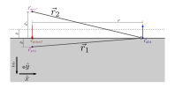

Semi-infinite homogeneous medium — adjust μa and μ′s
Analytical Continuous Wave (CW) solution for the diffuse reflectance from a semi-infinite medium using the extrapolated boundary condition.

Consider a pencil beam incident on the surface of a semi-infinite, homogeneous, turbid medium. Within the diffusion approximation the pencil beam is replaced by an isotropic point source placed one transport mean free path below the surface at depth \(z_0 = 1/\mu_{tr}\), where \(\mu_{tr} = \mu_a + \mu_s'\). The diffusion coefficient is \(D = 1/(3\mu_{tr})\) and the effective attenuation coefficient is:
$$\mu_{eff} = \sqrt{\frac{\mu_a}{D}} = \sqrt{3\,\mu_a\,\mu_{tr}}$$
To satisfy the extrapolated boundary condition an image (virtual) source mirrors the real source across the extrapolated boundary. The extrapolated boundary position is \(z_b = -2AD\), thus the image source height is:
$$z_0' = -z_0 + 2z_b$$
The parameter \(A\) accounts for the refractive-index mismatch between the medium (\(n_{in} = 1.4\)) and air (\(n_{out} = 1\)), giving \(A \approx 2.95\) (see the code block below for the full expression of \(A\)). Therefore, with the detector on the surface at source–detector separation \(\rho\), the distances to the real and image sources are:
$$r_1 = \sqrt{\rho^2 + z_0^2} \qquad r_2 = \sqrt{\rho^2 + z_0'^{\,2}}$$
and finally the CW diffuse reflectance is:
$$R(\rho) = \frac{1}{4\pi} \left[ z_0 \frac{\mu_{eff} + 1/r_1}{r_1^2}\,e^{-\mu_{eff} r_1} - z_0' \frac{\mu_{eff} + 1/r_2}{r_2^2}\,e^{-\mu_{eff} r_2} \right]$$
This expression describes the net optical flux exiting the medium surface per unit source power (units: mm⁻²). It is valid in the diffusion regime, i.e., when \(\rho \gg \ell_{tr} = 1/\mu_{tr}\) and \(\mu_a \ll \mu_s'\).
The simulator above runs the following JavaScript:
function n2A(n) {
if (n > 1) {
return 504.332889 - 2641.00214*n + 5923.699064*n**2
- 7376.355814*n**3 + 5507.53041*n**4
- 2463.357945*n**5 + 610.956547*n**6
- 64.8047*n**7;
} else if (n < 1) {
return 3.084635 - 6.531194*n + 8.357854*n**2
- 5.082751*n**3 + 1.171382*n**4;
}
return 1;
}
const A = n2A(1.4); // ≈ 2.95 for n = 1.4
function computeR(rhoArr, mua, musp) {
const mutr = mua + musp;
const D = 1 / (3 * mutr);
const mueff = Math.sqrt(mua / D);
const z0 = 1 / mutr;
const zb = - 2 * A * D;
const zp = - z0 + 2 * zb;
return rhoArr.map(rho => {
const r1 = Math.sqrt(rho*rho + z0*z0);
const r2 = Math.sqrt(rho*rho + zp*zp);
const t1 = z0 * (mueff + 1/r1) * Math.exp(-mueff * r1) / (r1*r1);
const t2 = - zp * (mueff + 1/r2) * Math.exp(-mueff * r2) / (r2*r2);
return (t1 + t2) / (4 * Math.PI);
});
}